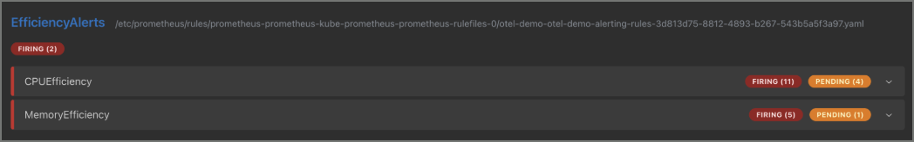
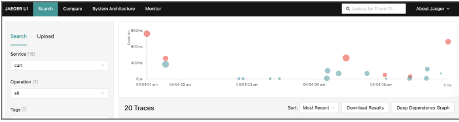

Extending Site Reliability Engineering
Fault Mechanisms within ITBench
Fall 2025
Project Description
This project extended the fault mechanisms used in ITBench, an open-source research framework for site reliability engineering supported by IBM mentors. The goal was to model failure scenarios that resemble real cloud incidents so distributed systems can be benchmarked under more realistic stress conditions.
I worked on fault injection across Kubernetes-deployed microservices running on a remote AWS cluster. The project gave me hands-on experience with cloud-native tooling, observability pipelines, and the practical side of designing failures that expose resilience weaknesses.
My Responsibilities
- Implemented fault injection mechanisms inspired by incidents from AWS, GCP, Azure, and IBM Cloud.
- Developed application-level, container-level, and multi-service coordination fault scenarios in Kubernetes-based microservices.
- Worked with Docker, Kubernetes, Prometheus, Jaeger, OpenTelemetry, Chaos Mesh, YAML, and Ansible playbooks.
- Contributed through Agile sprint planning, Git workflows, and peer code reviews.
Skills I Learned
- Cloud-native fault injection and resilience testing.
- Kubernetes deployment patterns and microservice observability.
- Infrastructure automation with YAML and Ansible.
- Research collaboration with industry mentors.
Project Links
Photos


